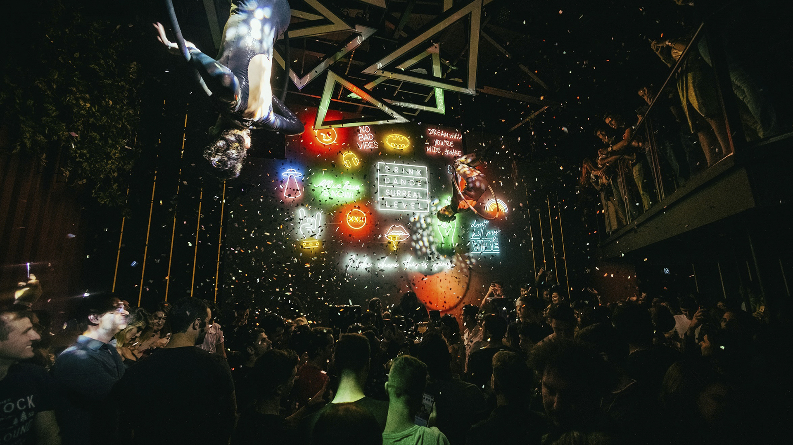
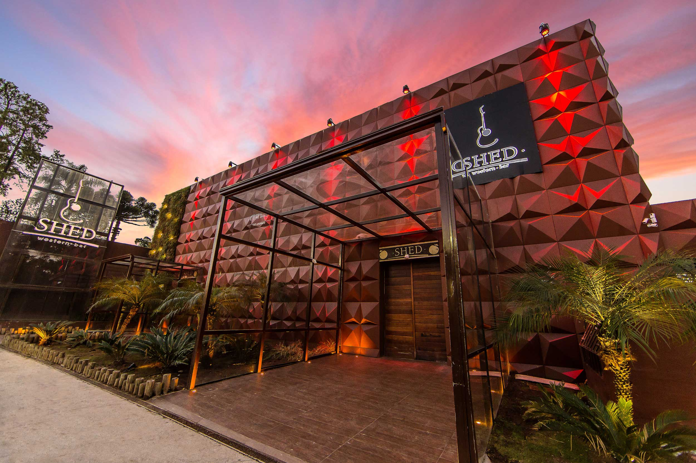
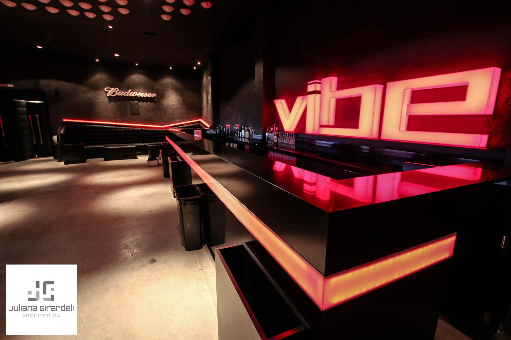
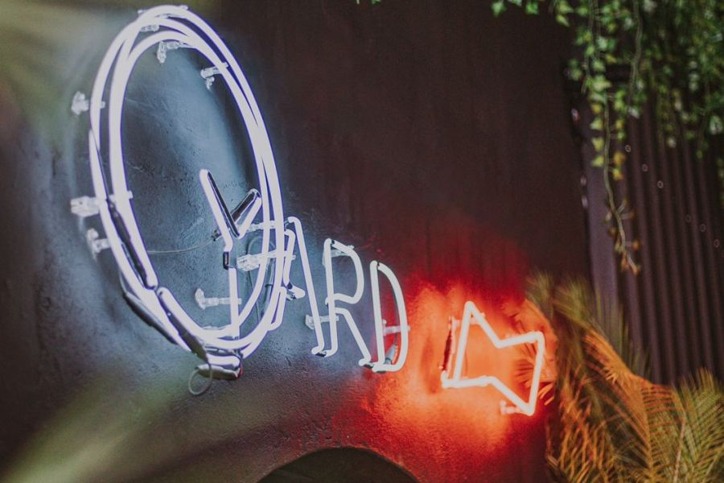
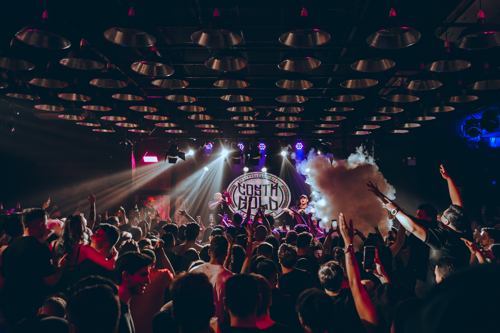
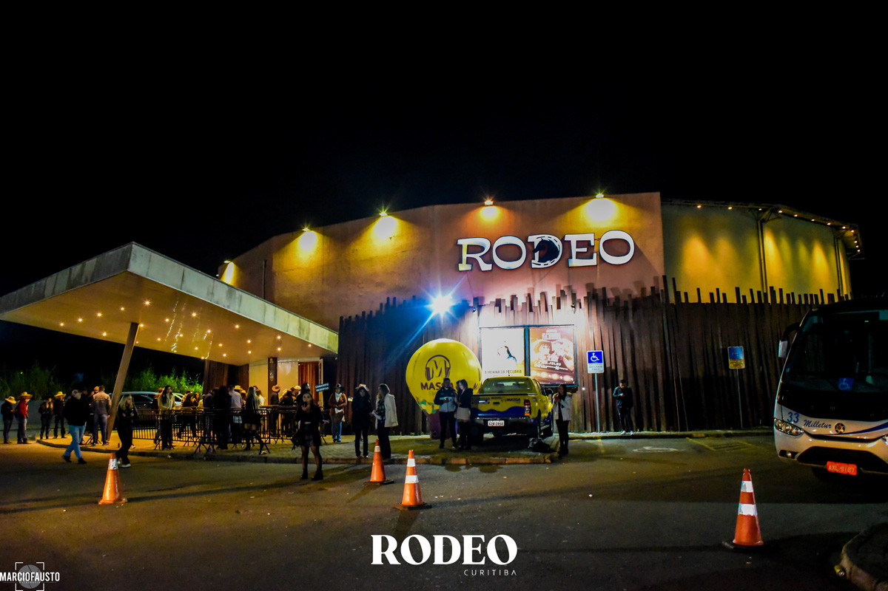

Baladas de Curitiba
A capital do Paraná é muito conhecida pelos seus parques,
sua área verde e seu clima frio. Mas, apesar das noites geladas,
isso não atrapalha em nada para quem quer se divertir na noite curitibana.
São muitas opções, de vários estilos, para aproveitar o melhor de diversão noturna em Curitiba.
Confira algumas opções de baladas em Curitiba para esquentar suas noites na cidade:
Level:

Balada focada em eventos tematizados, com estilos musicais variando de acordo com o dia.
Funk, eletrônica, pop e raggaeton.
Avenia Bispo Dom José 2277, Batel.
Shed:

Local amplo, com show frequente de artistas renomados e boa ambientação.
Sertanejo, funk, rap, eletrônica e variados.
Av. Bispo Dom José 2258, Batel.¡™
Vibe:

Clube de música eletrônica com ambiente moderno que recebe bandas e DJs alternativos contemporâneos.
Eletrônica e seus diversos tipos.
Rua Des. Motta 3211, Batel.
Yard:

Bar baseado em baladas irlandesas, com um ambiente aconchegante e comidas e drinks de alto padrão.
Indie, pop, rock, funk, eletrônica, entre outros.
Alameda Pres.Taunay 435, Batel.
+55:

Bar descontraído com ilha para DJ, música eletrônica, mesas privativas, comida e telão com música e esportes.
Rap, funk, eletrônica, entre outros.
Rua Vicente Machado 866, Batel.
Rodeo:

Bar rustico e moderno com ambiente em estilo country e bandas de música sertanejo ao vivo.
Sertanejo e forró.
BR-116 4100, Bacacheri.